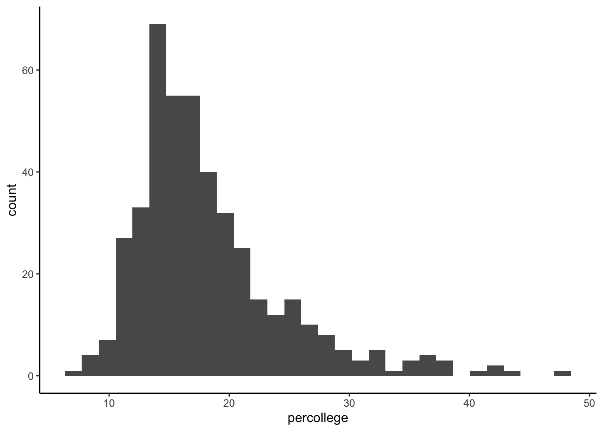
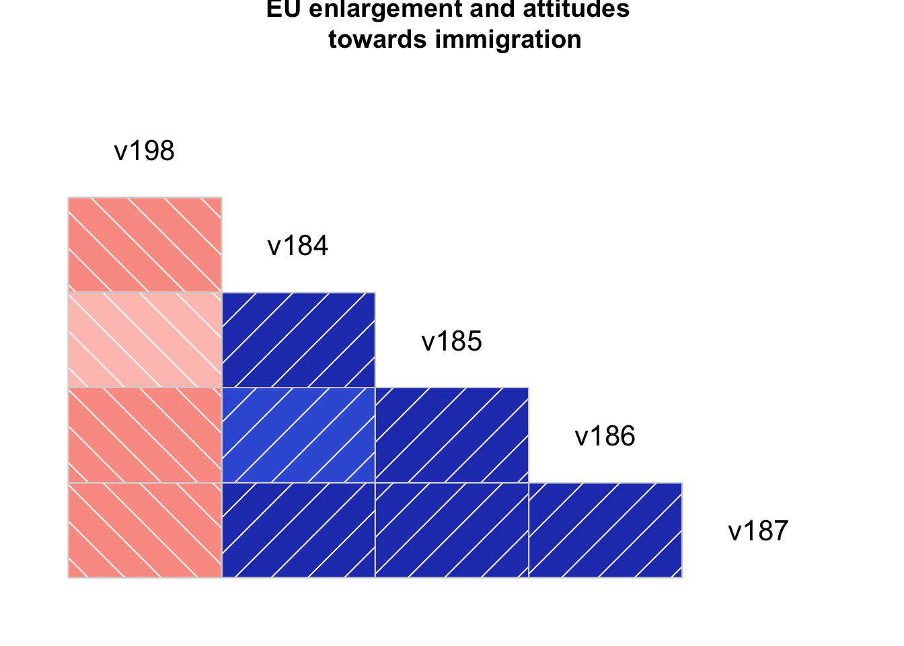

T- test
This time we will use a dataset named midwest. Download the dataset from SurreyLearn and load it into RStudio. To load our file we use the load() function. Give a name to your dataset using the assigment operator <-.
Let’s have a look at the dataset. Alternatively, you can have a look at the codebook- that is the document that comes with the dataset. The codebook describes the contents, structure, and layout of a data collection but it also provides a detailed overview of all variables included in the dataset.
We will explore our dataset, by using the head() and View() functions.
The head() function shows us the head, the first rows, of our dataset.
The view() function allows us to see inside the data frames. At the view window you can also sort the dataset by any column simply by clicking on the column.
Let’s start by examining the one paired t-test. That means that we will compare the mean of our sample against a known true value. To be more specific, we will calculate the percent of educated adults in the midwest, against a known value the percent of educated adults nationwide. Our overall aim is to examine whether the mean of educated adults in the midwest is significantly different to the national average. That means it could be higher or smaller.
According to official statistics, the percentage of college educated adults is \(32%\), our aim is to examine if in the midwest the average of college educated adults is statistically different to \(32%\).
A boxplot can give us a quick visual assessment of the data, a brief idea about what is going on in our data before we perform the t-test.
To do so we will use a very useful package in R, called ggplot2.
We first have to install ggplot2 by using the install.packages("ggplot2") function:
plot1 <- ggplot(midwest, aes(percollege)) +
geom_histogram() + theme_classic()
plot1 ## `stat_bin()` using `bins = 30`. Pick better value with `binwidth`.
One-tailed t-test
Our next step is to perform the one-tailed t-test. Taking into consideration the states that are part of the Midwest, we hypothesise that on average the percentage of educated adults will be smaller than the average.
t.test(midwest$percollege, mu = 32, alternative = "less")##
## One Sample t-test
##
## data: midwest$percollege
## t = -45.827, df = 436, p-value < 2.2e-16
## alternative hypothesis: true mean is less than 32
## 95 percent confidence interval:
## -Inf 18.7665
## sample estimates:
## mean of x
## 18.27274Note: 2.2e-16 is 2.2 x 10-16 which is 0.00000000000000022
## Two tailed t-test
Our next step is to compare the difference between two different states. In other words, our next step is to compare whether the two means, representing two different groups, are statistically different. This is called two sample t-test.
Before we start, install a package called dplyr and use the library() function to load it in RStudio.
Create the two groups
We start by creating the two groups:
library(dplyr)
data.frame1 <- midwest %>%
filter(state == "IN" | state == "IL") %>%
select(state, percollege)We can examine the distribution of our two groups with a box-plot:
ggplot(data.frame1, aes(state, percollege)) +
geom_boxplot() +
labs(title = "Two paired t-test",
y="Education",
x="State") +
theme_classic()
Our next step is to compare the two means:
t.test(percollege ~ state, data = data.frame1)##
## Welch Two Sample t-test
##
## data: percollege by state
## t = 2.4947, df = 191.61, p-value = 0.01345
## alternative hypothesis: true difference in means is not equal to 0
## 95 percent confidence interval:
## 0.4533698 3.8774354
## sample estimates:
## mean in group IL mean in group IN
## 18.78814 16.62274The results of the analysis suggest that the p< 0.05 is supporting the alternative hypothesis that the true difference in means is not equal to zero. What that really means is that there is a statistical difference between the two means.
Correlations
If we want to examine the relationship between two continuous variables then calculate the correlation coefficient commonly known as Pearson’s r. The correlation coefficient ranges from \(-1\) to \(1\) where \(-1\) indicates a perfect negative relationship between the two variables and \(1\) a perfect positive relationship.
We calculate the correlation coefficient by using the cor() function.
For example, load the EVS_UK dataset. We will examine the relationship between peoples’ attitudes towards EU (v198) and attitudes towards immigration (v185). The interpretation of the results depends upon the direction of the values. In our case our two continuous variables range from \(0\) to \(10\), for v198 \(0\) means that the responder is against the enlargement of the EU and 10 in favour. For v185, \(0\) means that the responder believe that immigrants do not take away jobs while \(10\) means that they do take jobs away.
load("EVS_UK.RData")
cor(y=EVS_UK$v198, x=EVS_UK$v185, use="complete.obs")## [1] -0.2465359Our coefficient is equal to \(-0.24\), the \(-\) sign indicates that there is a negative correlation between the two variables. A negative correlation means that there is an inverse relationship between two variables - when one variable decreases, the other increases. In other words, higher values of one variable tend to be associated with lower values of the second variable.
The opposite is a positive correlation, when one variable decreases as the other variable decreases, or one variable increases while the other increases.
You may visualise the relationship between two variables by creating a correlogram:
We start by creating a subset of our dataset, our subset will include the two variables we are interested in, v198 and v185, and few more variables measuring attitudes towards immigration v184, v186, and v187.
evs_subset <- c("v198", "v184", "v185", "v186", "v187")
euimmi.sample <- EVS_UK[evs_subset]
View(euimmi.sample)let’s confirm that all of our variables are numeric i.e. continuous
class(EVS_UK$v198)## [1] "haven_labelled"class(EVS_UK$v185)## [1] "haven_labelled"class(EVS_UK$v186)## [1] "haven_labelled"class(EVS_UK$v187)## [1] "haven_labelled"EVS_UK$v198<-as.numeric(EVS_UK$v198)
EVS_UK$v185<-as.numeric(EVS_UK$v185)
EVS_UK$v186<-as.numeric(EVS_UK$v186)
EVS_UK$v187<-as.numeric(EVS_UK$v187)Visualising correlations
Don’t forget to install the package we will use by using the install.packages() function:
install.packages("corrgram")
library(corrgram)## Registered S3 method overwritten by 'seriation':
## method from
## reorder.hclust gcluscorrgram(euimmi.sample, order=NULL, lower.panel=panel.shade,
upper.panel=NULL, text.panel=panel.txt,
main="EU enlargement and attitudes \n towards immigration")